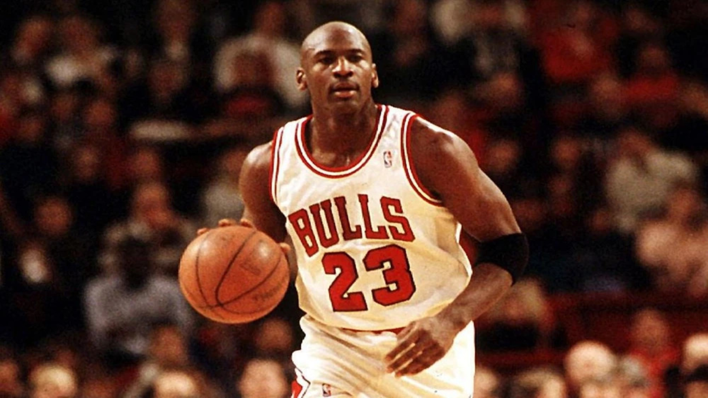
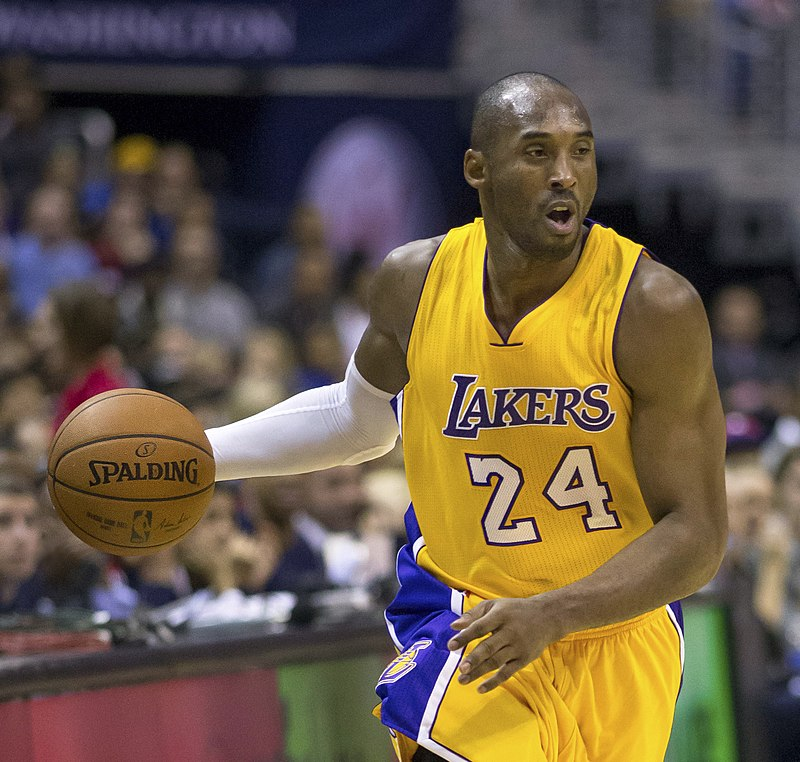
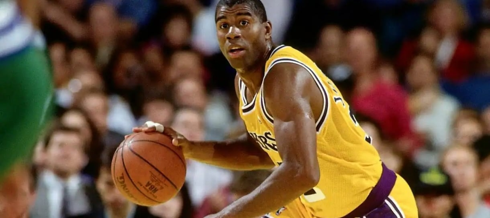
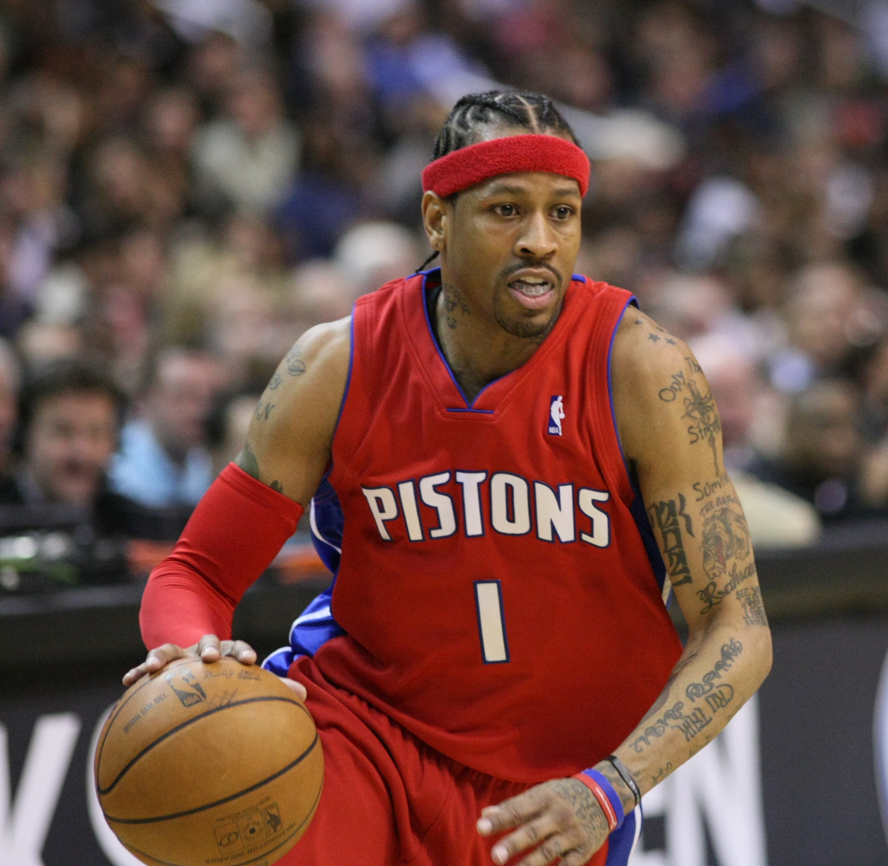

Michael Jordan
Considerado por muitos o maior jogador de todos os tempos.
Mais do que um atleta, LeBron James se tornou um símbolo de liderança, longevidade e excelência dentro e fora das quadras. Conheça sua história, recordes, títulos e momentos que marcaram gerações.
Confira algumas das jogadas mais impressionantes da carreira daquele que revolucionou o basquete moderno.
Uma atuação inesquecível que consolidou LeBron James entre os maiores atletas de todos os tempos.
Antes de se tornar uma lenda, LeBron cresceu admirando alguns dos maiores nomes da história do basquete.

Considerado por muitos o maior jogador de todos os tempos.

Um exemplo de dedicação, competitividade e mentalidade vencedora.

Revolucionou a posição de armador e inspirou gerações.

Um dos jogadores mais influentes da cultura do basquete moderno.